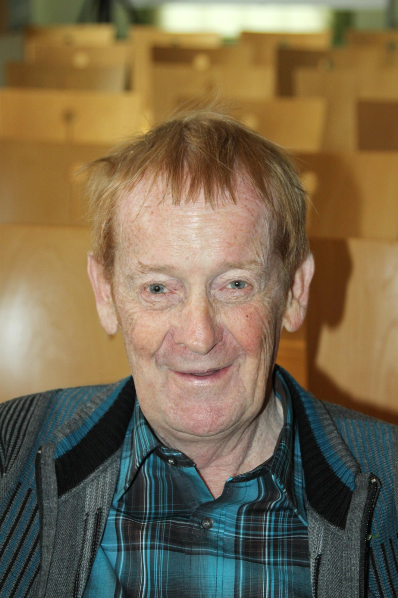
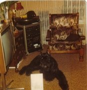
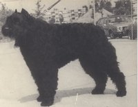

Hoe zijn we begonnen.
Op 30 september 2013 is de oprichter van kennel Fan it Hanenhiem, Sikke de Haan, op 70 jarige leeftijd plotseling overleden. Onze man en vader was een echte bouvierliefhebber. Hij heeft zijn best gedaan om met de Fan it Hanenhiem-bouviers het ras te fokken zoals hij dacht dat een bouvier moest zijn. Zijn liefde voor het ras zien we in onze "gouden" honden thuis nog steeds terug. Hij leek qua karakter zelf ook op de bouvier: standvastig, trouw en onverschrokken. Hij ging voor ons door het vuur.
Sikke en heit, we weten de woorden niet te vinden.... We missen je ontzettend

Op onderstaande foto staat de stammoeder van onze kennel:

Zij is geboren in 1976 en is overleden in 1983.
Op de onderstaande foto haar zoon uit ons eerste nest. Dit nest bestond ook maar alleen uit hem:

Hij is slechts 14 maanden oud geworden. Hij werd vergiftigd op een show in Arnhem (3 juni 1979)